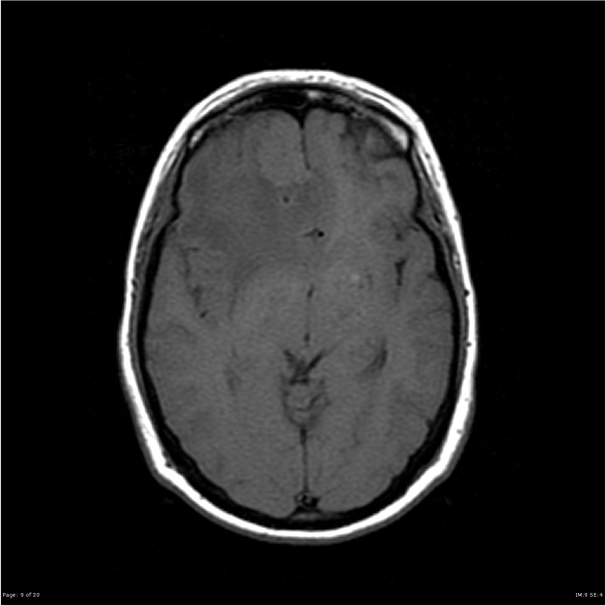
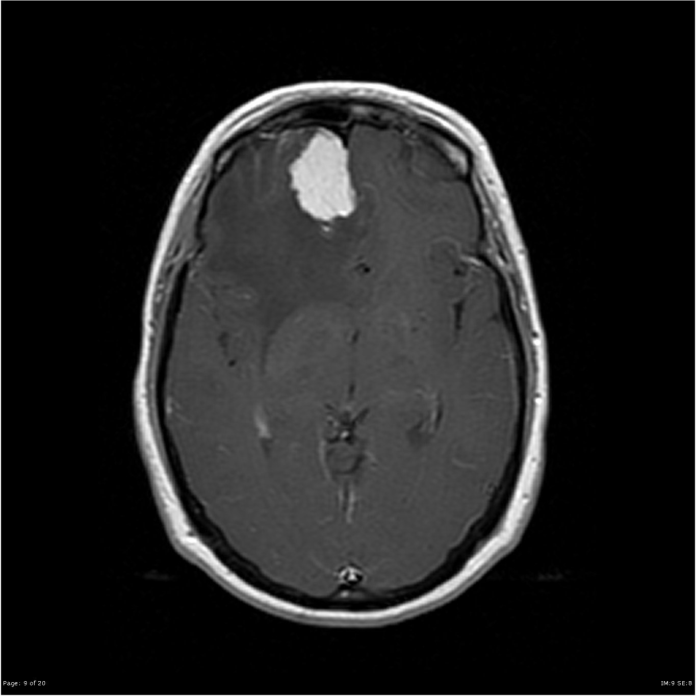

صبغة وريدية تحتوي الغادولينيوم تقصّر زمن T1، فتصير الأنسجة التي تمتصها بيضاء على صور T1 بعد الحقن.
🎯 Purpose الغرض
إظهار ما يكسر الحاجز الدموي الدماغي أو يزداد فيه تدفق الدم: الأورام (tumours) والنقائل، العدوى والالتهاب (abscess, discitis)، نشاط التصلّب المتعدد (MS activity: اللويحة الحديثة تتعزّز)، وتصوير الأوعية بالرنين (MR angiography).
💉 Contrast الصبغة وطريقة إعطائها
صبغة غادولينيوم (gadolinium-based contrast agent) تُعطى وريدياً، الجرعة المعتادة 0.1 mmol/kg، باليد أو بمضخّة (injector)، ثم تُعاد صور T1 مباشرة بعد الحقن (وغالباً T1 fat sat). تُطرح عن طريق الكلية.
📋 Patient preparation تحضير المريض
استمارة سلامة الرنين (MRI safety screening) قبل أي شيء
السؤال عن أمراض الكلى والغسيل الكلوي؛ وفحص وظيفة الكلى (eGFR) للمرضى المعرّضين للخطر حسب بروتوكول القسم
السؤال عن تفاعل سابق لصبغة الغادولينيوم وعن الربو والحساسية
السؤال عن الحمل والرضاعة
تركيب كانيولا وريدية (IV cannula) قبل دخول المريض للجهاز
لا يحتاج صياماً في أغلب فحوصات الرنين مع الصبغة (إلا إذا طلب البروتوكول ذلك، مثل رنين البطن)
📸 Views / Positions الإسقاطات والوضعيات
T1 قبل الحقن (T1 pre-contrast) — للمقارنة
T1 بعد الحقن (T1 post-gadolinium / T1 C+) بالمستويات المطلوبة: axial و coronal و sagittal
T1 C+ fat sat — إخماد الدهون حتى لا تختلط بالتعزيز
تسلسل ديناميكي (dynamic) أو 3D T1 GRE عند الحاجة (مثل الغدة النخامية والأوعية)
🚫 Contraindications موانع الفحص
تفاعل شديد سابق لصبغة الغادولينيوم
قصور كلوي شديد (eGFR < 30) أو قصور كلوي حاد أو غسيل كلوي — نسبي: تُعطى فقط عند الضرورة وبأقل جرعة ومن النوع الأكثر أماناً (group II)
الحمل — نسبي: لا تُعطى إلا إذا كانت ضرورية جداً
أي مانع لدخول الرنين نفسه (جهاز أو معدن غير آمن)
⚠️ Complications المضاعفات
خفيفة وشائعة نسبياً: غثيان، صداع، إحساس بالبرودة مكان الحقن
تفاعل يشبه الحساسية (allergic-like reaction) — نادر، والشديد منه نادر جداً
تسرّب الصبغة خارج الوريد (extravasation)
التليّف الجهازي كلوي المنشأ (NSF) عند مرضى الكلى الشديد
ترسّب كميات قليلة من الغادولينيوم في الدماغ (gadolinium deposition) بلا ضرر سريري مثبت
🖼️ Images · الصور
Meningioma — T1 before gadoliniumورم سحائي — T1 قبل الصبغة🔴 Pathology

Case courtesy of Frank Gaillard, Radiopaedia.org, rID: 14109 · CC BY-NC-SA 3.0
Meningioma — T1 after gadolinium (T1 C+)نفس الورم — T1 بعد الصبغة: يتعزّز بقوة🔴 Pathology

Case courtesy of Frank Gaillard, Radiopaedia.org, rID: 14109 · CC BY-NC-SA 3.0المصادر